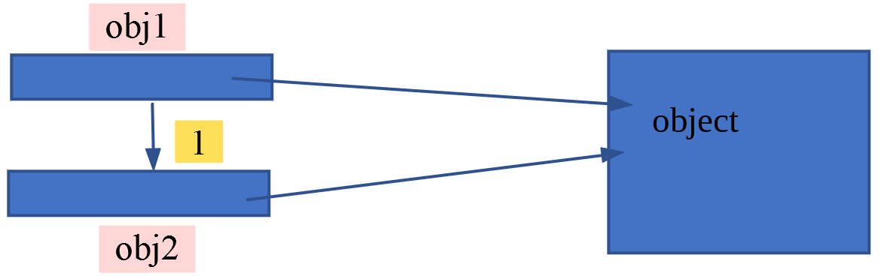

5. Die Klassen
Vokabular: Eine Klasse (Schlüsselwort [class]) ist ein PHP-Typ. Eine Variable dieses Typs heißt Objekt. Ein Objekt ist eine Instanz einer Klasse.
In diesem Kapitel zeigt sich die Entwicklung von PHP zwischen den Versionen 7 und 8 am deutlichsten. PHP 8 hat eine Reihe von Neuerungen eingeführt, die das Schreiben von Klassen knapper und sicherer machen: typisierte Attribute, Promotion von Konstruktorparametern, schreibgeschützte Attribute ([readonly]), Aufzählungen ([enum]), Property Hooks und asymmetrische Sichtbarkeit (PHP 8.4), Klonen mit Änderung (PHP 8.5) ... Wir führen diese Konzepte anhand von Beispielen ein und folgen dabei dem Aufbau des PHP-7-Kurses: Wir beginnen mit der einfachsten Klasse und arbeiten uns bis zu einer Klasse vor, die nach heutigen Best Practices geschrieben ist.
5.1. Die Verzeichnisstruktur der Skripte
Die Skripte dieses Kapitels befinden sich im Ordner [scripts-console/classes]:
Wie in den vorherigen Kapiteln wird ein Konsolenskript in einem in dessen Ordner geöffneten Terminal von [VS Code] mit dem Befehl [php script-name.php] ausgeführt.
5.2. Kann jede Variable zu einem Objekt mit Attributen werden?
In PHP 7 konnte man [$obj1->attr1 = "one";] in eine nicht existierende Variable [$obj1] schreiben: PHP erzeugte dann stillschweigend (mit einer einfachen Warnung) ein Objekt vom Typ [stdClass] mit dem Attribut [attr1]. In PHP 8 ist das nicht mehr möglich. Das Skript [classes-01.php] lautet wie folgt:
Ergebnisse:
Kommentare
- Zeilen 7–9: In PHP 8 existiert die Variable [$obj0] nicht, und die Operation [$obj0->attr1 = "one"] löst einen Fehler vom Typ [\Error] (Zeile 2 der Ergebnisse) aus, anstatt ein Objekt zu erzeugen. Die Struktur [try / catch] behandeln wir im Kapitel über Ausnahmen. Merken Sie sich vorerst nur, dass man damit den Fehler abfangen und die Ausführung des Skripts fortsetzen kann;
- Zeile 13: Ein generisches Objekt muss explizit mit dem Operator [new] erzeugt werden. Die vordefinierte Klasse [stdClass] ist eine leere Klasse;
- Zeilen 15–16: Die Notation [$obj->attr] bezeichnet das Attribut [attr] des Objekts [$obj]. Existiert es nicht, wird es erzeugt; man spricht von einem dynamischen Attribut. Die Klasse [stdClass] ist für diesen Zweck gedacht: Man kann ihr beliebig viele Attribute hinzufügen;
- Zeile 25: Der Ausdruck [$obj2 = $obj1] ist, wenn [$obj1] ein Objekt ist, eine Kopie von Referenzen: [$obj2] und [$obj1] sind Referenzen (Adressen) auf dasselbe Objekt. Das Objekt selbst kann über jede der beiden Referenzen verändert werden;
- Zeilen 27–30: sollen zeigen, dass [$obj1] und [$obj2] zwei verschiedene Variablen sind, die auf dasselbe Objekt zeigen. [$obj2 = $obj1] hat den Wert von [$obj1] in die Variable [$obj2] kopiert (Operation 1 unten). Der Wert von [$obj1] ist die Adresse eines Objekts. Somit zeigen [$obj1] und [$obj2] auf dasselbe Objekt. Wenn man eine Variable [$obj] verwendet, die auf ein Objekt zeigt, bearbeitet PHP das Objekt, auf das sie zeigt. Wie das folgende Diagramm zeigt, können wir das referenzierte Objekt entweder über [$obj1] oder über [$obj2] verändern. Das veranschaulichen die Zeilen 5 und 6 der Ergebnisse;

- Zeile 39: Der Ausdruck [$obj3 = &$obj2] bewirkt, dass [$obj2] und [$obj3] an derselben Adresse liegen wie [1 unten]. Man kann sagen, dass die beiden Variablen Aliase für dieselbe Speicherstelle sind. Beide zeigen auf ein Objekt, Objekt A unten: [2];
- Zeile 50: Die Operation [$obj2 = new \stdClass()] erzeugt ein neues Objekt, Objekt B [3 unten], und die Adresse dieses neuen Objekts wird der Variablen [$obj2] zugewiesen [4]. Da [$obj2] und [$obj3] zwei Aliase für dieselbe Speicherstelle sind, zeigt [$obj3] ebenfalls auf das neue Objekt B. Das zeigen die Zeilen 31–42 der Ergebnisse;

- Zeile 61: Ist ein Objekt ein Dictionary? In PHP 7 akzeptierte die Funktion [count] ein Objekt (mit einer Warnung) und gab 1 zurück, was keinen Sinn ergab. In PHP 8 löst sie einen Fehler [TypeError] aus: [count] akzeptiert nur Arrays oder Objekte, die die Schnittstelle [Countable] implementieren (Zeile 43 der Ergebnisse);
- Zeile 66: Die Funktion [get_object_vars] gibt die Attribute eines Objekts als assoziatives Array zurück. Die Anzahl der Elemente des Arrays entspricht der Anzahl der Attribute des Objekts;
- Zeilen 68–69: Ein Objekt lässt sich wie ein Dictionary mit [foreach] durchlaufen. Die Schlüssel sind die Namen der Attribute, die Werte sind die Werte derselben Attribute. Ein Objekt hat also Ähnlichkeiten mit einem Dictionary, ist aber keines. In PHP 7 erfolgte diese Iteration mit der Funktion [each], die inzwischen entfernt wurde;
- Zeilen 72–74: Der Umwandlungsoperator [(object)] wandelt ein assoziatives Array in ein [stdClass]-Objekt um, und der Operator [(array)] führt die umgekehrte Operation durch.
5.3. Eine Klasse Person ohne deklarierte Attribute
In PHP 7 konnte eine Klasse Attribute verwenden, die sie nicht deklariert hatte: Es genügte, [$p->firstName = "Paul";] zu schreiben, um das Attribut [firstName] im Objekt [$p] zu erzeugen, genau wie bei [stdClass]. Diese dynamischen Attribute bei Objekten einer gewöhnlichen Klasse sind seit PHP 8.2 veraltet (deprecated): Bei jeder Erzeugung eines solchen Attributs wird die Meldung „Deprecated: Creation of dynamic property Person::$firstName is deprecated“ angezeigt. In einer künftigen PHP-Version werden sie entfernt. Der Grund ist einfach: Ein Tippfehler im Namen eines Attributs ([$p->firstNam = "Paul"]) würde stillschweigend ein neues Attribut erzeugen, statt den Fehler zu melden.
Von dieser Regel gibt es drei Ausnahmen:
- die Klasse [stdClass], die wir gerade verwendet haben, akzeptiert weiterhin dynamische Attribute;
- auch eine Klasse, der das Attribut [#[\AllowDynamicProperties]] vorangestellt ist, akzeptiert sie. Dieses Attribut wurde geschaffen, um die Migration von Legacy-Code zu erleichtern. Wir werden es in diesem Kurs nicht verwenden;
- eine Klasse, die die magischen Methoden [__get] und [__set] definiert, entscheidet selbst, was mit einem nicht deklarierten Attribut geschieht.
Diese dritte Lösung stellt das Skript [classes-02.php] vor:
Ergebnisse:
Kommentare
- Zeilen 6–38: definieren eine Klasse mit dem Namen [Person]. Eine Klasse ist eine Vorlage zur Erzeugung von Objekten. Sie besteht aus Attributen und Funktionen, die Methoden genannt werden;
- Zeile 10: Das einzige für die Klasse deklarierte Attribut ist ein privates Array (die Bedeutung des Schlüsselworts [private] sehen wir gleich). In diesem Array werden die „nicht deklarierten“ Attribute gespeichert;
- Zeilen 13–16: Die magische Methode [__set] wird von PHP automatisch aufgerufen, wenn in ein nicht vorhandenes (oder nicht zugängliches) Attribut geschrieben wird. Sie erhält den Namen des Attributs und den ihm zuzuweisenden Wert. Hier speichert sie diesen Wert im Array [$attributes]. Methoden, deren Namen mit zwei Unterstrichen beginnen, heißen magische Methoden: Sie werden nicht explizit aufgerufen; stattdessen ruft PHP sie auf;
- Zeilen 19–22: Die magische Methode [__get] wird beim Lesen eines nicht vorhandenen Attributs aufgerufen. Sie gibt den gespeicherten Wert oder [null] zurück. Der Operator [??] liefert seinen linken Operanden, wenn er existiert und nicht [null] ist; andernfalls liefert er seinen rechten Operanden;
- Zeile 25: Die magische Methode [__isset] wird von der Funktion [isset] aufgerufen;
- Zeile 31: Die Methode [identity] verwendet drei Attribute, die in der Klasse nicht deklariert sind. Das Schlüsselwort [$this] bezeichnet das Objekt, auf das die Methode angewendet wird. Jeder Zugriff auf [$this->firstName] löst einen Aufruf von [__get] aus;
- Zeile 40: Ein Objekt [$p] vom Typ [Person] wird erzeugt. Das Schlüsselwort [new] dient zum Erzeugen eines neuen Objekts. Die Operation gibt eine Referenz auf das erzeugte Objekt (also eine Adresse) zurück. Verschiedene Schreibweisen sind möglich: [new Person()], [new Person], [new person]. Beim Klassennamen wird die Groß-/Kleinschreibung nicht unterschieden;
- Zeilen 41–43: Die drei von der Methode [identity] benötigten Attribute werden im Objekt [$p] von der Methode [__set] erzeugt;
- Zeile 45: Die Methode [identity] der Klasse [Person] wird auf das Objekt [$p] angewendet. Im Code der Methode [identity] verweist [$this] auf dasselbe Objekt wie [$p].
Diese Technik hat ihre Berechtigung (Konfigurationsobjekte, Kapselung von aus einer Datei gelesenen Daten), ist aber nicht die übliche Art, eine Klasse zu schreiben. In einer regulären Klasse deklariert man ihre Attribute.
5.4. Die Klasse Person mit deklarierten Attributen
Das Skript [classes-03.php] lautet wie folgt:
Ergebnisse:
Kommentare
- Zeilen 9–11: Die Attribute der Klasse werden explizit deklariert. Das Schlüsselwort [public] bedeutet, dass sie von außerhalb der Klasse zugänglich sind. In PHP 7 verwendete der Kurs das aus PHP 4 stammende Schlüsselwort [var], das ein Synonym für [public] ist und heute nicht mehr verwendet wird;
- Jedem Attribut ist sein Typ vorangestellt: [string] für Vor- und Nachname, [int] für das Alter. Es handelt sich um typisierte Attribute, die mit PHP 7.4 eingeführt wurden. Mögliche Typen sind die der Funktionsparameter: [int], [float], [string], [bool], [array], ein Klassen- oder Schnittstellenname, ein Nullable-Typ [?string], ein Union-Typ [int|float] ...;
- Zeile 30: Ein typisiertes Attribut akzeptiert nur Werte seines Typs. Jeder andere Wert löst einen Fehler [TypeError] aus (Zeile 3 der Ergebnisse);
- Zeilen 35–37: Ein typisiertes Attribut ohne Standardwert befindet sich im Zustand „nicht initialisiert“, bis ihm ein Wert zugewiesen wird. Das Lesen löst einen Fehler aus (Zeile 4 der Ergebnisse). Untypisierte Attribute haben dagegen den Standardwert [null]. Das ist ein Grund, alle Attribute eines Objekts bereits bei seiner Erzeugung zu initialisieren: Das ist die Aufgabe des Konstruktors.
5.5. Die Klasse Person mit einem Konstruktor
Die vorherigen Beispiele zeigten exotische Klassen, wie man sie in PHP 4 fand. Es wird nicht empfohlen, diesen Beispielen zu folgen. Wir stellen nun eine Klasse [Person] [classes-04.php] vor, die den üblichen Best Practices folgt, wie sie in allen objektorientierten Sprachen (Java, C# usw.) zu finden sind:
Ergebnisse:
Kommentare
- Zeile 4: Wir legen fest, dass die deklarierten Typen der Funktionsparameter strikt eingehalten werden müssen. Ohne diese Deklaration würde PHP versuchen, einen Wert des falschen Typs umzuwandeln (zum Beispiel den String ["48"] in die ganze Zahl [48]);
- Zeilen 6–60: die Klasse [Person];
- Zeilen 9–11: die privaten Attribute ([private]) der Klasse. Diese Attribute sind nur innerhalb der Klasse sichtbar. Weitere verwendbare Schlüsselwörter sind:
- [public]: macht das Attribut zu einem öffentlichen Attribut, das außerhalb der Klasse sichtbar ist;
- [protected]: macht das Attribut zu einem geschützten Attribut, das innerhalb der Klasse und ihrer abgeleiteten Klassen sichtbar ist;
- Da die Attribute privat sind, kann man von außerhalb der Klasse nicht auf sie zugreifen. Wir können daher nicht [$p->lastName = "Landru"] schreiben: Wir befinden uns außerhalb der Klasse [Person], und das Attribut [lastName] ist privat. Die Zeilen 72–74 überprüfen das: Der Versuch, [$p->lastName] zu lesen, führt zu einem Fehler (Zeile 5 der Ergebnisse). Um die privaten Attribute des Objekts [$p] zu initialisieren, gibt es zwei Möglichkeiten:
- die öffentlichen Methoden [set] und [get] in den Zeilen 14–39 verwenden (die Namen dieser Methoden sind frei wählbar). In diesem Fall schreiben wir: [$p->setLastName("Landru")];
- den Konstruktor in den Zeilen 45–50 verwenden. Man schreibt dann: [$p = new Person("Michel", "Landru", 44)]. Diese Syntax ruft automatisch die Methode der Klasse [Person] mit dem Namen [__construct] auf;
- Zeile 64: Diese Zeile gibt die Person [$p] als String aus. Dazu wird die Methode der Klasse [Person] mit dem Namen [__toString] (Zeile 54) verwendet;
- Zeile 70: Seit PHP 8.0 implementiert jede Klasse, die eine Methode mit dem Namen [__toString] definiert, automatisch die vordefinierte Schnittstelle [Stringable] (Schnittstellen behandeln wir im nächsten Kapitel). Der Operator [instanceof] prüft, ob ein Objekt von einem bestimmten Typ ist. Eine Funktion kann somit einen Parameter vom Typ [string|Stringable] deklarieren: Er akzeptiert dann einen String oder jedes Objekt, das sich in einen String umwandeln lässt;
- allen Methoden der Klasse wurde das Schlüsselwort [public] vorangestellt, das anzeigt, dass die Methode außerhalb der Klasse sichtbar ist. Die übrigen verwendbaren Schlüsselwörter sind, wie bei den Attributen und mit derselben Bedeutung, [private] und [protected]. Ohne explizites Sichtbarkeitsschlüsselwort ist die Methode implizit [public]. Die Stilrichtlinien PSR-12, denen die Skripte dieses Kurses folgen, verlangen, dass die Sichtbarkeit immer explizit angegeben wird.
5.6. Promotion von Konstruktorparametern
Die vorherige Klasse ist langatmig: Jedes Attribut wird viermal genannt (Deklaration, Konstruktorparameter, Zuweisung im Konstruktor, Getter). Seit PHP 8.0 erlaubt die Promotion von Konstruktorparametern , ein Attribut direkt in der Parameterliste des Konstruktors zu deklarieren und zu initialisieren. Das Skript [classes-22.php] zeigt dies:
Ergebnisse:
Kommentare
- Zeilen 10–14: Jeder Konstruktorparameter, dem ein Sichtbarkeitsschlüsselwort ([private], [protected], [public]) vorangestellt ist, wird „befördert“ (promoted): PHP deklariert ein Attribut mit demselben Namen und Typ und weist ihm den Wert des Parameters zu. Diese drei Zeilen ersetzen die Attributdeklarationen und Zuweisungen der vorherigen Klasse;
- Zeile 13: Ein beförderter Parameter kann einen Standardwert haben. Das Komma nach dem letzten Parameter ist seit PHP 8.0 erlaubt; so lässt sich später leichter ein Parameter hinzufügen;
- Zeile 15: Der Rumpf des Konstruktors kann Code enthalten (zum Beispiel Validierungen). Hier gibt es nichts zu tun;
- Zeile 52: Benannte Argumente (PHP 8.0) erlauben es, Argumente in beliebiger Reihenfolge zu übergeben, indem man sie über den Parameternamen anspricht. Das macht den Code lesbarer, insbesondere wenn eine Funktion viele Parameter hat;
- Zeile 55: Der Parameter [age] wird weggelassen; er nimmt seinen Standardwert an;
- Zeile 58: Die Funktion [var_dump] zeigt, dass die beförderten Attribute echte private Attribute der Klasse sind (Zeilen 5–12 der Ergebnisse).
5.7. Die Klasse Person mit Gültigkeitsprüfungen im Konstruktor
Der Konstruktor einer Klasse ist der geeignete Ort, um zu überprüfen, ob die Initialisierungswerte des Objekts korrekt sind. Ein Objekt kann jedoch auch über seine Methoden [set] oder gleichwertige Methoden initialisiert werden. Um dieselben Prüfungen nicht an zwei verschiedenen Stellen zu duplizieren, kann man diese Prüfungen in die Methoden [set] legen. Erweist sich ein Initialisierungswert des Objekts als fehlerhaft, wird eine Ausnahme ausgelöst. Hier ein Beispiel.
Verschieben Sie zunächst die Definition der Klasse [Person] in eine eigene Datei, [Person.php]:
Kommentare
- Zeile 4: Legt fest, dass die Typen der Funktionsparameter wie deklariert eingehalten werden müssen;
- Zeile 7: Definiert einen Namensraum (Namespace). Der vollständige (qualifizierte) Name der Klasse [Person] lautet somit [\Examples\Person]. Beachten Sie das Zeichen [\] am Anfang des qualifizierten Namens: Es ergibt einen absoluten qualifizierten Namen. Fehlt dieses Zeichen, ist der Name ein relativer qualifizierter Name (relativ zum aktuellen Namespace). Gehören also zwei Klassen A und B zum selben Namespace E, kann im Code der Klasse A auf die Klasse B mit der relativen Notation B zugegriffen werden. Gehört Klasse A zum Namespace E1 und Klasse B zum Namespace E2, kann im Code der Klasse A auf die Klasse B mit der absoluten Notation [\E2\B] zugegriffen werden. Eine Klasse in einem Namespace zu definieren, ist nicht zwingend, gilt aber als Best Practice: Zwei Bibliotheken können dann jeweils eine Klasse mit dem Namen [Person] definieren, ohne dass es zu Konflikten kommt;
- Namespaces entsprechen häufig der Verzeichnisstruktur der Dateien. So liegt Klasse A im Namespace E1 oft in einer Datei mit dem Namen [E1/A.php]. Das ist die PSR-4-Konvention, die das Werkzeug [Composer] zum automatischen Laden von Klassen verwendet und die wir in späteren Kapiteln nutzen werden. Die Erweiterung [PHP Intelephense] von [VS Code] verlangt dies nicht. Verwechseln Sie den Dateibaum nicht mit einem Namespace: Der vollständig qualifizierte Name einer Klasse verwendet einen Namespace und hat nichts mit dem Dateibaum der PHP-Datei zu tun, die die Klasse enthält. Hier befindet sich die Klasse [\Examples\Person] in der Datei [scripts-console/classes/Person.php];
- Zeilen 13–15: die drei privaten Attribute der Klasse;
- Zeilen 33–41: Initialisierung des Attributs [firstName] und Überprüfung des Initialisierungswerts;
- Zeile 36: Die Funktion [trim($string)] entfernt die Leerzeichen am Anfang und Ende von [$string]. So ist [trim(" abcd ")] der String ["abcd"], und [trim(" ")] ist der leere String.;
- Zeile 37: Ist der Vorname leer, wird eine Ausnahme ausgelöst (Zeile 38); andernfalls wird der Vorname gespeichert (Zeile 40). Zum Auslösen einer Ausnahme wird hier die vordefinierte Klasse [Exception] verwendet. Hier müssen wir ihren absoluten Namen verwenden, [\Exception]. Verwenden wir ihren relativen Namen, [Exception], wird diese Klasse im aktuellen Namensraum gesucht, d. h. im Namensraum [Examples] der Klasse [Person]. Der PHP-Interpreter sucht also nach einer Klasse mit dem absoluten Namen [\Examples\Exception], die nicht existiert;
- Zeilen 63–69: Der Konstruktor verwendet die Methoden [set] zur Initialisierung der Attribute: Die Validierungen werden nur einmal geschrieben;
- Die Methoden in den Zeilen 72 und 79 werden im folgenden Absatz beschrieben.
Die Klasse [Person] wird vom folgenden Skript verwendet, [classes-05.php]:
Ergebnisse:
Erläuterungen
- Zeile 7: Das Skript verwendet die Klasse [Person]. Sie müssen dem PHP-Interpreter daher mitteilen, wo er die Definition dieser Klasse findet. Dies ist die Aufgabe der Anweisungen [include file] und [require file]. Der Unterschied zwischen den beiden Anweisungen ist folgender: Wenn die Anweisung [include file] beim Laden von [file] auf Fehler stößt, wird ein Fehler der Stufe [E_WARNING] ausgegeben, die Ausführung wird aber fortgesetzt, während [require] in derselben Situation einen schwerwiegenden Fehler erzeugt und die Ausführung des Skripts beendet. Jede dieser beiden Anweisungen hat eine Variante: [include_once] und [require_once]. Diese beiden Varianten behandeln den Fall, dass dieselbe Datei mehrfach eingebunden wird. Betrachten Sie zum Beispiel ein Projekt aus mehreren PHP-Skripten, von denen einige auf die Klasse [Person] verweisen. Beim Ausführen dieser Skripte würde die Datei [Person.php] mehrfach eingebunden, was zu einem Fehler führt, da eine Klasse nicht zweimal definiert werden kann. Die Lösung besteht darin, die Varianten mit [_once] zu verwenden, die sicherstellen, dass die Datei im globalen Skript des Projekts nur einmal eingebunden wird;
- Die Konstante [__DIR__] ist eine PHP-Konstante, die den vollständigen Namen des Ordners bezeichnet, der das Skript mit der Konstante [__DIR__] enthält. Zeile 9 zeigt sie an (Zeile 2 der Ergebnisse). Auf dem Rechner des Lesers lautet das Ergebnis etwa [C:\laragon\www\php8-oct-2026\scripts-console\classes/Person.php]. In einem Dateipfad können Sie unter Windows wahlweise [/] oder [\] verwenden. Die Verwendung von [__DIR__] macht das Skript unabhängig vom aktuellen Ordner zum Zeitpunkt der Ausführung;
- Zeile 12: Das Skript [classes-05.php] hat keinen Namensraum. Wenn der Code den relativen Namen [Person] verwendet, wird dieser im Wurzel-Namensraum [\] gesucht und daher nicht gefunden. Für dieses Problem gibt es zwei Lösungen:
- den vollständigen Klassennamen [\Examples\Person] verwenden;
- die Anweisung [use] verwenden, die festlegt, dass sich im folgenden Code der Name [Person] auf die Klasse [\Examples\Person] bezieht. In einer [use]-Anweisung ist der Name immer absolut: Das führende [\] ist unnötig (dies ist die empfohlene Schreibweise). Die Anweisung ist gleichbedeutend mit [use Examples\Person as Person;], die festlegt, dass der Alias [Person] auf die Klasse [\Examples\Person] verweist;
- die Anweisung [use] teilt dem Interpreter mit, dass die Klasse [Person] in Wirklichkeit die Klasse [\Examples\Person] ist. Wo aber findet der Interpreter den Code dieser Klasse? Das teilt ihm die Anweisung [require_once] mit. Die beiden Anweisungen haben sehr unterschiedliche Aufgaben: [use] arbeitet mit Namen, [require_once] lädt eine Datei;
- Zeile 16: Ein Objekt der Klasse [Person] wird erzeugt. Die Methode [__construct] der Klasse [Person] wird hier implizit ausgeführt;
- Zeile 18: zeigt die Person [$p] an. Zur Anzeige muss der Wert der Variablen [$p] in eine Zeichenkette umgewandelt werden. Dabei wird implizit die Methode [Person::__toString] ausgeführt. Diese Methode muss daher eine Zeichenkette zurückgeben;
- Wir haben gesehen, dass der Konstruktor der Klasse [Person] eine Ausnahme vom Typ [\Exception] auslösen kann. Diese Ausnahme muss daher behandelt werden. Folglich sollte die Erzeugung einer Person immer von einer Struktur
***[try / catch]umgeben sein, wie in den Zeilen 20–34 gezeigt. Hier lösen wir absichtlich einen Fehler aus, indem wir ein Alter übergeben, das keine ganze Zahl ist. In diesem Fall wird der Fehler vom PHP-Interpreter ausgelöst und nicht vom Code der Klasse [Person]. Das liegt daran, dass die Signatur der Methode [Person::__construct]* [__construct(string $firstName, string $lastName, int $age)] lautet. Der an den Konstruktor übergebene Parameter [age] muss daher vom Typ Integer sein. Ist dies nicht der Fall, löst der PHP-Interpreter einen Fehler vom Typ [TypeError] aus. Außerdem lösen die Methoden [set] der Klasse [Person]* eine Ausnahme vom Typ [\Exception] aus. Da der Konstruktor, der sie aufruft, keine Struktur [try / catch] besitzt, wird die Ausnahme eine Ebene nach oben an den Code weitergereicht, der den Konstruktor aufgerufen hat, d. h. an den Code des Skripts [classes-05.php]. Das Skript [classes-05.php]* kann somit zwei Arten von Fehlern empfangen: [\Exception] oder [\TypeError]. Aus diesem Grund hat die Struktur [try] zwei [catch]-Klauseln, um die beiden Fehlerarten getrennt zu behandeln. Ist sich ein Entwickler sicher, dass bestimmte Fehler nicht auftreten können, verwendet er die entsprechenden [catch]**-Klauseln nicht. Hier werden sie ausschließlich zu Demonstrationszwecken systematisch eingesetzt; - Zeile 22: Sie können entweder [Exception] oder [\Exception] schreiben. Die erste Variante verwendet den relativen Klassennamen, relativ zum Namensraum des Skripts. Da das Skript keinen Namensraum hat, ist sein Namensraum die Wurzel der Namensräume: [\]. Daher ist die Schreibweise [Exception] hier gleichbedeutend mit [\Exception]. In einem Skript ohne eigenen Namensraum sollten Sie die absoluten Namen der vordefinierten PHP-Klassen bevorzugen. Entscheiden Sie sich später, diesem Skript einen Namensraum zuzuweisen, bleiben die absoluten Klassennamen gültig, während im anderen Fall die Änderung des Namensraums bei relativen Klassennamen zu Fehlern führt;
- Zeile 23: Tritt eine Ausnahme auf, ruft die Methode [Exception::getMessage] die Fehlermeldung der Ausnahme ab. Dasselbe gilt für einen Fehler vom Typ [TypeError]. In der Methode [Person::setFirstName] wurde [throw new \Exception("The first name must not be empty")] geschrieben. Dies ist die Meldung, die von der Methode [getMessage] in Beispiel 3 abgerufen wird (Zeile 5 der Ergebnisse);
- Zeile 4 der Ergebnisse: die Fehlermeldung für [TypeError]. Seit PHP 8.0 benennt sie den fehlerhaften Parameter mit Nummer und Name: „Argument #3 ($age) must be of type int, string given.“ Die Fehlermeldungen in PHP 8 sind genauer als die in PHP 7.
5.8. Hinzufügen einer Methode, die als zweiter Konstruktor dient
In PHP ist es nicht möglich, mehrere Konstruktoren mit unterschiedlichen Parametern zu haben, mit denen ein Objekt auf verschiedene Weisen erzeugt werden könnte. Daher können Methoden als Konstruktoren dienen. Die Klasse [Person] hat zwei solche Methoden:
Erläuterungen
- Zeilen 72–76: Die Methode [initWithPerson] ermöglicht es, die Attributwerte eines anderen Objekts der Klasse [Person] dem aktuellen Objekt zuzuweisen. Hier ruft sie den Konstruktor [__construct] auf, das ist aber nicht zwingend. Sie könnte die Attribute der Klasse [Person] auch selbst initialisieren. Beachten Sie, dass eine Methode der Klasse [Person] Zugriff auf die privaten Attribute aller Objekte der Klasse [Person] hat, nicht nur auf die von [$this];
- Zeilen 79–83: Die Methode [fromPerson] ist eine andere Möglichkeit, dies zu erreichen, die heute gebräuchlicher ist. Es ist eine statische Methode (Schlüsselwort [static]): Sie wird nicht auf ein Objekt, sondern auf die Klasse angewendet. Sie wird mit der Schreibweise [Person::fromPerson($p)] aufgerufen. Sie erzeugt mit [new self(...)] ein neues Objekt: Das Schlüsselwort [self] bezeichnet die Klasse, in der der Code geschrieben ist, hier [Person]. Der Rückgabetyp [self] zeigt an, dass die Methode ein Objekt dieser Klasse zurückgibt. Eine solche Methode wird als benannter Konstruktor oder Factory-Methode bezeichnet. Auf statische Methoden kommen wir etwas später zurück.
Die neue Klasse [Person] wird vom folgenden Skript verwendet, [classes-06.php]:
Ergebnisse:
Erläuterungen
- Zeile 17, Zeile 26, Zeile 33: Es ist üblich, nach einer Ausnahme die Ausführung eines Konsolenskripts zu beenden, wenn der aufgetretene Fehler nicht behebbar ist. In einem Webskript ist das anders: Man beendet die Ausführung des Skripts nicht, sondern zeigt eine Fehlerseite an. Befinden Sie sich innerhalb einer Funktion, wird die Anweisung [exit] nicht verwendet; stattdessen wird [return] verwendet: Die Ausführung des Skripts wird nicht angehalten ([exit]), sondern die Funktion wird verlassen ([return]), nachdem ein Fehler gesetzt wurde;
- Zeile 39: Aufruf des benannten Konstruktors;
- Zeile 42: Der Operator [===] ergibt, auf zwei Objekte angewendet, true, wenn es sich um dasselbe Objekt handelt (gleiche Adresse). [$p3] und [$p2] sind zwei verschiedene Objekte (Zeile 5 der Ergebnisse);
- Zeile 43: Der Operator [==], auf zwei Objekte derselben Klasse angewendet, ergibt true, wenn ihre Attribute dieselben Werte haben (Zeile 6 der Ergebnisse). Die Funktion [var_export] gibt eine PHP-Darstellung ihres Parameters zurück, in diesem Fall [true] oder [false].
5.9. Validierung mit Property Hooks (PHP 8.4)
Die vorherige Klasse [Person], schützt ihre Attribute, indem sie sie privat macht und externen Code zwingt, die Methoden [get] und [set] zu verwenden. PHP 8.4 bietet eine andere Lösung: Property Hooks. Ein öffentliches Attribut kann von einem Hook [set] begleitet werden – dem Code, der bei jedem Schreiben des Attributs ausgeführt wird – und von einem Hook [get] – dem Code, der bei jedem Lesen des Attributs ausgeführt wird. So bleibt die Einfachheit der Schreibweise [$p->age = 49] erhalten, und dennoch behalten Sie die Kontrolle über die Werte. Dies zeigt das Skript [classes-23.php]:
Ergebnisse:
Erläuterungen
- Zeilen 9–17: Dem öffentlichen Attribut [firstName] folgt ein von geschweiften Klammern umschlossener Block, der seine Hooks enthält. Hier gibt es nur einen Hook, [set];
- Zeile 10: Der Hook [set] erhält den Wert, der dem Attribut zugewiesen werden soll. Er bereinigt ihn mit [trim], prüft ihn und löst eine Ausnahme aus, wenn er fehlerhaft ist;
- Zeile 15: Innerhalb seiner Hooks bezeichnet [$this->firstName] den Speicherplatz des Attributs: Dort wird der Wert abgelegt. Überall sonst läuft der Zugriff über [$this->firstName] die Hooks;
- Zeile 13: Eine Ausnahme vom Typ [\InvalidArgumentException] wird ausgelöst; dies ist eine vordefinierte Klasse, die von [\Exception] abgeleitet und spezifischer als diese ist und ein ungültiges Argument signalisiert. Die vordefinierten PHP-Ausnahmen behandeln wir im Kapitel über Ausnahmen;
- Zeile 31: Wenn der Hook [set] keinen Parameter deklariert, steht der empfangene Wert in der impliziten Variablen [$value] zur Verfügung, und sein Typ entspricht dem des Attributs;
- Zeilen 40–42: Ein Attribut, das nur einen Hook [get] hat und nie auf seinen eigenen Speicherplatz verweist, ist ein virtuelles Attribut: Es wird bei jedem Lesen berechnet und belegt keinen Platz im Objekt. Die Schreibweise [get => expression] ist eine Kurzform für einen Hook [get] , der den Wert des Ausdrucks liefert;
- Zeilen 45–50: Der Konstruktor weist die Attribute zu; diese Zuweisungen laufen über die Hooks [set]. Die Validierung erfolgt somit sowohl bei der Konstruktion als auch bei jeder späteren Änderung, ohne dass die Methoden [set] verwendet werden;
- Zeile 54: Der Vorname [" Paul "] wird vom Hook [set] bereinigt;
- Zeile 57: Das Attribut [age] wird direkt geändert, jedoch über seinen Hook [set];
- Zeilen 60–66: Es wird versucht, ungültige Werte zuzuweisen. Die Schreibweise [$p->$attribute] verwendet den Inhalt der Variablen [$attribute] als Attributnamen. Die Hooks [set] lösen ihre Ausnahmen aus (Zeilen 4–5 der Ergebnisse);
- Zeile 69: Das virtuelle Attribut [identity] hat keinen Hook [set]: Es ist schreibgeschützt (Zeile 6 der Ergebnisse);
- Zeile 75: Das Objekt hat gültige Werte behalten. [var_dump] zeigt nur drei Attribute: Das virtuelle Attribut [identity] existiert nicht im Speicher.
Property Hooks gibt es in anderen Sprachen (C#, Kotlin, Swift) schon lange. Sie machen es überflüssig, Getter und Setter „auf Verdacht“ zu schreiben: Man beginnt mit einem einfachen öffentlichen Attribut und fügt einen Hook hinzu, sobald eine Validierung erforderlich wird, ohne den Code zu ändern, der die Klasse verwendet.
5.10. Asymmetrische Sichtbarkeit (PHP 8.4)
Häufig soll eine Eigenschaft von allen lesbar, aber nur von der Klasse selbst änderbar sein. Früher schrieb man eine private Eigenschaft und einen öffentlichen Getter. PHP 8.4 erlaubt es, unterschiedliche Sichtbarkeitsstufen für das Lesen und das Schreiben einer Eigenschaft festzulegen: Man spricht von asymmetrischer Sichtbarkeit. Das Skript [classes-24.php] demonstriert dies anhand eines Bankkontos:
Ergebnisse:
Erläuterungen
- Zeile 9: Das Attribut [balance] ist lesend öffentlich ([public]) und schreibend privat ([private(set)]). Externer Code kann [$account->balance] lesen, aber nur die Methoden der Klasse können es ändern. Sie können auch [protected(set)] schreiben: In diesem Fall können abgeleitete Klassen das Attribut ändern;
- Zeile 12: Asymmetrische Sichtbarkeit ist auch für einen geförderten (promoted) Parameter möglich;
- Zeilen 17–25: Die Methoden [deposit] und [withdraw] sind die einzigen Möglichkeiten, den Kontostand zu ändern. Sie prüfen die Gültigkeit der Operationen;
- Zeile 39: Attribute werden direkt gelesen, ohne Getter. Die Schreibweise [{$expression}] innerhalb einer in Anführungszeichen stehenden Zeichenkette erlaubt das Einfügen eines Ausdrucks, der komplexer ist als eine einfache Variable;
- Zeile 42: Das Schreiben auf den Kontostand von außerhalb der Klasse verursacht einen Fehler (Zeile 3 der Ergebnisse). Das Zeichen [_] kann in einem Zahlenliteral als Tausendertrennzeichen verwendet werden (PHP 7.4);
- Zeile 48: Die Abhebung wird von der Methode [withdraw] abgelehnt (Zeile 4 der Ergebnisse). Der Kontostand hat sich nicht geändert (Zeile 5).
5.11. Schreibgeschützte Attribute und Klassen ([readonly])
Ein Objekt, dessen Zustand sich nach seiner Erzeugung nicht mehr ändern kann, heißt unveränderlich (immutable). Unveränderliche Objekte vereinfachen die Programmierung erheblich: Sie können von mehreren Teilen des Codes gemeinsam genutzt werden, ohne befürchten zu müssen, dass einer dieser Teile sie ändert. PHP 8.1 führte schreibgeschützte Attribute ein (Schlüsselwort [readonly]): Ein solches Attribut kann nur einmal und nur innerhalb der Klasse initialisiert werden. PHP 8.2 führte schreibgeschützte Klassen ein: Alle ihre Attribute sind dann [readonly]. Das Skript [classes-25.php] stellt eine unveränderliche Klasse [Person] vor:
Ergebnisse:
Erläuterungen
- Zeile 7: Die Klasse ist als [readonly] deklariert: Ihre drei geförderten Attribute sind schreibgeschützt. Das Schlüsselwort [final], das wir in Kürze behandeln, verhindert, dass von der Klasse abgeleitet wird;
- Zeilen 10–12: Die Attribute sind öffentlich: Sie können direkt gelesen werden, ohne Getter. Sie können nicht geändert werden: Ein Getter wäre zwecklos;
- Zeile 14: Der Konstruktor prüft die Gültigkeit des Alters. Ein unveränderliches Objekt muss bei der Konstruktion gültig sein, da es sich nie mehr ändern wird;
- Zeilen 20–24: „Ändern“ eines unveränderlichen Objekts bedeutet, eine geänderte Kopie dieses Objekts zu erzeugen. Genau das tut die Methode [withAge]. Ihr Rückgabetyp [static] (PHP 8.0) bedeutet „ein Objekt der Klasse, auf der die Methode aufgerufen wurde“. Der Unterschied zu [self] zeigt sich erst bei abgeleiteten Klassen: Erbt eine abgeleitete Klasse die Methode, bezeichnet der Typ [static] die abgeleitete Klasse;
- Zeile 23: Der Operator [clone] erzeugt eine Kopie des Objekts [$this]. Ab PHP 8.5 kann [clone] als Funktion verwendet werden und als zweiten Parameter ein Array der in der Kopie zu ändernden Attribute akzeptieren (clone with). Vor PHP 8.5 mussten Sie die „magische“ Methode [__clone] verwenden oder das Objekt mit [new] neu aufbauen;
- Zeile 37: Das Ändern eines [readonly]-Attributs verursacht einen Fehler (Zeile 3 der Ergebnisse);
- Zeile 43: Eine [readonly]-Klasse akzeptiert außerdem keine dynamischen Attribute: Dies ist ein Fehler und keine bloße Deprecation-Warnung (Zeile 4 der Ergebnisse);
- Zeile 48: [$p2] ist eine neue Person; [$p1] hat sich nicht geändert (Zeilen 5–6 der Ergebnisse).
In den folgenden Kapiteln verwenden wir häufig [readonly]-Klassen zur Darstellung von Daten (Steuerdaten der Behörde, Ergebnisse einer Steuerberechnung usw.).
5.12. Ein Array von [Person]-Objekten
Das folgende Beispiel, [classes-07.php], zeigt, dass Arrays von Objekten möglich sind:
Ergebnisse:
Erläuterungen
- Zeile 12: Erzeugung eines Arrays mit 2 Personen;
- Zeile 15: Durchlaufen des Arrays;
- Zeile 16: [$group[$i]] ist ein Objekt vom Typ [Person]. Zur Anzeige wird die Methode [Person::__toString] verwendet.
5.13. Erstellen einer von der Klasse Person abgeleiteten Klasse
Erstellen Sie die folgende Klasse [Teacher] in einer Datei namens [Teacher.php]:
Erläuterungen
- Zeile 7: Die Klasse [Teacher] gehört ebenfalls zum Namensraum [Examples];
- Zeile 10: Die Klasse [Teacher] ist von der Klasse [Person] abgeleitet ([extends]). Die abgeleitete Klasse [Teacher] erbt die Attribute und Methoden ihrer Elternklasse;
- Zeile 13: Die Klasse [Teacher] fügt ein neues Attribut hinzu, [subject], das nur ihr eigen ist;
- Zeile 27: Der Konstruktor der Klasse [Teacher] nimmt 4 Parameter entgegen:
- 3 zur Initialisierung der Elternklasse (Vorname, Nachname, Alter), Zeile 30;
- 1 für die eigene Initialisierung (Fach), Zeile 32;
- Zeile 30: Die abgeleitete Klasse hat über das Schlüsselwort [parent::] Zugriff auf die Methoden und Konstruktoren ihrer Elternklasse. Hier werden die Parameter (Vorname, Nachname, Alter) an den Konstruktor der Elternklasse übergeben;
- Zeile 36: [#[\Override]] ist ein PHP-Attribut (PHP 8.3). Ein Attribut, geschrieben als [#[] and []], ist eine Information, die einer Klasse, einer Methode, einem Parameter usw. zugeordnet ist und die PHP oder andere Werkzeuge verwenden können. Dieses Attribut erklärt, dass die folgende Methode eine Methode der Elternklasse überschreibt. Ist dies nicht der Fall (z. B. wegen eines Tippfehlers im Methodennamen oder weil die Methode aus der Elternklasse entfernt wurde), meldet PHP einen schwerwiegenden Fehler. Ein Beispiel dafür sehen wir etwas später;
- Zeilen 37–40: Die Methode [__toString] der abgeleiteten Klasse verwendet die Methode [__toString] der Elternklasse.
Die Klasse [Teacher] wird vom folgenden Skript verwendet, [classes-08.php]:
Ergebnisse:
Erläuterungen
- Zeilen 7–8: Wir müssen dem PHP-Interpreter mitteilen, wo sich die beiden Klassen [Teacher, Person] befinden. Die Reihenfolge ist wichtig: Die Elternklasse [Person] muss definiert sein, bevor die Klasse [Teacher] definiert wird;
- Zeilen 10–11: Deklaration der vollständigen Namen der beiden Klassen. Dadurch können wir sie im Code einfach mit ihrem Namen ansprechen, ohne das Namensraum-Präfix;
- Zeile 16: Wir erzeugen ein Array, das ein Objekt vom Typ [Teacher] und ein Objekt vom Typ [Person] enthält;
- Zeilen 19–21: Anzeige der Elemente des Arrays;
- Zeile 20: Die Methode [__toString] jedes Elements [$group[$i]] wird aufgerufen. Die Klasse [Person] hat eine Methode [__toString]. Die Klasse [Teacher] hat zwei: die ihrer Elternklasse und ihre eigene. Man kann sich fragen, welche aufgerufen wird. Die Ausführung zeigt, dass die Methode der Klasse [Teacher] aufgerufen wurde. Das ist immer so: Wird eine Methode auf einem Objekt aufgerufen, wird sie in folgender Reihenfolge gesucht: in der Klasse des Objekts, in seiner Elternklasse, sofern vorhanden, dann in der Elternklasse der Elternklasse und so weiter. Die Suche endet, sobald die Methode gefunden wird.
5.14. Erstellen einer zweiten von der Klasse Person abgeleiteten Klasse
Das folgende Beispiel erstellt in der Datei [Student.php] eine Klasse namens [Student], die von der Klasse [Person] abgeleitet ist:
Diese Klasse wird vom folgenden Skript verwendet, [classes-09.php]:
Ergebnisse:
Erläuterungen
- Zeile 10: Eine einzelne [use]-Anweisung kann mehrere Klassen desselben Namensraums deklarieren, indem sie in geschweifte Klammern gesetzt werden;
- Zeile 22: Das Array wird mit [foreach] durchlaufen, das sowohl den Index [$i] als auch das Element [$person] liefert;
- Zeile 23: Die Schreibweise [$object::class] (PHP 8.0) liefert den vollständigen Namen der Klasse des Objekts. Sie ersetzt die Funktion [get_class], die ohne Parameter seit PHP 8.3 als veraltet gilt.
5.15. Beziehung zwischen dem Konstruktor einer abgeleiteten Klasse und dem der Elternklasse
In manchen objektorientierten Sprachen ruft der Konstruktor einer abgeleiteten Klasse automatisch den ihrer Elternklasse auf. Der folgende Code [classes-16.php] zeigt, dass dies bei PHP nicht der Fall ist:
Ergebnisse:
Erläuterungen
- Zeilen 15–23: Der Konstruktor von [Class2] ruft den seiner Elternklasse nicht auf; der Konstruktor der Elternklasse wird nicht ausgeführt (Zeile 3 der Ergebnisse);
- Zeile 31: Der Konstruktor von [Class3] ruft den seiner Elternklasse explizit auf (Zeilen 5–6 der Ergebnisse);
- Zeilen 37–40: Die Klasse [Class4] hat keinen Konstruktor. Sie erbt daher den Konstruktor ihrer Elternklasse, der ausgeführt wird (Zeile 8 der Ergebnisse).
5.16. Überschreiben einer Methode der Elternklasse
Wir haben bereits gesehen, dass eine Methode der Elternklasse in einer Kindklasse überschrieben werden kann. So wurde die Methode [__toString] der Klasse [Person] in den Kindklassen [Teacher] und [Student] überschrieben. Das Skript [classes-13.php] veranschaulicht dieses Konzept noch einmal:
Ergebnisse:
Erläuterungen
- Zeilen 7–18: Die Klasse [Class1] definiert zwei Methoden, f und g;
- Zeilen 21–29: Die Klasse [Class2] erweitert die Klasse [Class1] und definiert ihre Methode f neu. Das Attribut [#[\Override]] dokumentiert diese Neudefinition;
- Zeile 32: erzeugt ein Objekt [$c2] vom Typ [Class2];
- Zeile 33: ruft die Methode f des Objekts [$c2] auf. Da diese Methode in der Klasse [Class2] existiert, wird sie ausgeführt. Sie ruft ihrerseits die Methode f der Elternklasse mit der Schreibweise [parent::f()] auf;
- Zeile 34: ruft die Methode g des Objekts [$c2] auf. Da diese Methode in der Klasse [Class2] nicht existiert, wird sie in der Elternklasse gesucht, dort gefunden und ausgeführt;
- Zeile 35: erzeugt ein Objekt [$c1] vom Typ [Class1];
- Zeile 36: ruft die Methode f des Objekts [$c1] auf. Es wird die Methode f der Klasse [Class1] ausgeführt.
Sehen wir uns nun den Zweck des Attributs [#[\Override]] an. Im Skript [classes-10.php] wollte der Entwickler die Methode f neu definieren, hat aber den falschen Namen verwendet:
Ergebnisse:
Ohne das Attribut [#[\Override]] wäre die Methode [F2] einfach eine neue Methode von [Class2], und das Skript würde [1] anzeigen, ohne eine Auffälligkeit zu melden: Der Fehler bliebe unbemerkt. Mit dem Attribut lehnt PHP die Klasse bereits beim Laden ab (Zeile 3 der Ergebnisse). Im weiteren Verlauf dieses Kurses verwenden wir [#[\Override]] konsequent bei überschriebenen Methoden.
5.17. Übergabe eines Objekts als Funktionsparameter
Betrachten wir das folgende Skript [classes-14.php]:
Ergebnisse:
Erläuterungen
- Zeilen 7–18: die Klasse [Class1];
- Zeilen 21–29: eine von [Class1] abgeleitete Klasse [Class2] ;
- Zeile 32: eine Funktion, die einen Parameter vom Typ [Class1] erwartet. Ist der erwartete Typ eine Klasse, kann der tatsächliche Parameter ein Objekt des erwarteten Typs oder eines abgeleiteten Typs sein;
- Zeile 41: Die Funktion [doSomething] wird mit einem Parameter vom Typ [Class2] aufgerufen, obwohl der erwartete Typ [Class1] ist. Das wird akzeptiert, weil [Class2] von [Class1] abgeleitet ist (Zeile 2 der Ergebnisse);
- Zeile 44: Ein Objekt vom Typ [stdClass] ist nicht vom Typ [Class1]: Der Aufruf verursacht einen Fehler vom Typ [TypeError] (Zeile 3 der Ergebnisse).
5.18. Abstrakte Klassen
Eine abstrakte Klasse ist eine unvollständige Klasse, die nicht instanziiert werden kann. Von ihr muss abgeleitet werden, damit sie nutzbar ist.
Wozu dient eine abstrakte Klasse? Manchmal haben wir Klassen, die eine oder mehrere Methoden gemeinsam haben, sich aber in anderen Methoden oder Attributen unterscheiden. In solchen Fällen ist es wünschenswert, alles Gemeinsame in einer Elternklasse zusammenzufassen. Vorerst brauchen wir keine abstrakte Klasse. Nehmen wir aber an, die Kindklassen unterscheiden sich nur in einer Methode M: Die Signatur der Methode wäre in allen Kindklassen gleich, ihre Implementierung aber unterschiedlich. Um die Kindklassen zur Implementierung der Methode M zu verpflichten:
- deklarieren wir die Signatur der Methode M in der Elternklasse. Da die Elternklasse nicht weiß, wie sie zu implementieren ist, stellen wir der Methode das Schlüsselwort [abstract] voran: Das bedeutet, dass die Implementierung der Methode M auf die Kindklassen verschoben wird;
- da die Elternklasse nicht vollständig implementiert ist, wird sie mit demselben Schlüsselwort [abstract] ebenfalls als abstrakt deklariert. Das bedeutet, dass die Klasse nicht mehr instanziiert werden kann. Es muss eine Kindklasse erstellt werden, die die Implementierung der Methode M definiert, damit der Rumpf der Elternklasse genutzt werden kann.
Hier ein Beispiel [classes-15.php]:
Ergebnisse:
Erläuterungen
- Zeilen 7–17: Die Klasse [Class1] ist abstrakt, weil sie die Methode g in Zeile 16 nicht implementiert. Von ihr muss daher in einer anderen Klasse abgeleitet werden, damit sie nutzbar ist;
- Zeilen 20–28: Die Klasse [Class2] erweitert die Klasse [Class1] und definiert die Methode
gihrer Elternklasse. Das Attribut [#[\Override]] gilt auch für die Implementierung einer abstrakten Methode; - Zeilen 31–46: Die Klasse [Class3] erweitert die Klasse [Class1] und definiert die Methode g ihrer Elternklasse;
- Zeilen 40–44: Die Klasse [Class3] definiert außerdem die Methode f ihrer Elternklasse neu;
- Zeilen 49–54: Es werden zwei Objekte der Typen [Class2] und [Class3] erzeugt, und ihre Methoden f und g werden aufgerufen;
- Zeile 57: Eine abstrakte Klasse kann nicht instanziiert werden; es tritt ein Fehler auf (Zeile 6 der Ergebnisse).
5.19. Finale Klassen
Eine finale Klasse ist eine Klasse, von der nicht abgeleitet werden kann. Betrachten Sie das folgende Skript [classes-11.php]:
Ergebnisse:
Erläuterungen
- Zeile 10: Das Schlüsselwort [final] macht die Klasse [Class1] zu einer finalen Klasse, von der nicht abgeleitet werden kann;
- Zeile 15: Die Klasse [Class2] erweitert die finale Klasse [Class1], was ein Fehler ist;
- Der Fehler wird gemeldet, sobald der PHP-Interpreter die Definition der Klasse [Class2] lädt: Es handelt sich um einen schwerwiegenden Fehler, der nicht von einem [try / catch] abgefangen werden kann. Das Skript wird nicht ausgeführt.
Eine Klasse als [final] zu deklarieren, ist eine bewährte Vorgehensweise, wenn sie nicht für die Ableitung konzipiert wurde; so wird verhindert, dass sich andere Entwickler auf interne Details der Klasse stützen.
5.20. Finale Methoden
Eine finale Methode ist eine Methode, die von einer Unterklasse nicht überschrieben werden kann. Hier ein Beispiel, [classes-12.php]:
Ergebnisse:
Erläuterungen
- Zeile 13: Die Methode
fder Klasse[Class1]wird mit dem Schlüsselwort***[final]*** als final deklariert; - Zeile 20: Die Klasse [Class2] erweitert die Klasse [Class1];
- Zeile 23: Die Methode
fder Elternklasse[Class1]wird neu definiert. Das verursacht einen schwerwiegenden Fehler, der gemeldet wird, sobald die Klasse[Class2]geladen wird.
5.21. Statische Methoden und Attribute
Eine statische Methode ist eine Methode, die der Klasse zugeordnet ist, in der sie definiert ist, und nicht den Instanzobjekten der Klasse. Deklariert also die Klasse C eine statische Methode M, schreibt man, um sie von außerhalb der Klasse zu verwenden:
- [C::M] wenn Sie sich außerhalb der Klasse befinden;
- [self::M] wenn Sie sich innerhalb der Klasse befinden.
Hier ein Beispiel: [classes-17.php]:
Ergebnisse:
Erläuterungen
- Zeile 9: Die Methode [say] wird mit dem Schlüsselwort [static] als statisch deklariert;
- Zeile 17: Innerhalb der Klasse wird die statische Methode [say] mit der Schreibweise [self::say] aufgerufen;
- Zeile 23: Die statische Methode [say] wird mit der Schreibweise [Class1::say] aufgerufen;
- Zeile 26: First-Class-Callable-Syntax (PHP 8.1): Wenn Sie anstelle der Argumente eines Aufrufs [(...)] schreiben, wird der Aufruf nicht ausgeführt, sondern die Funktion selbst in Form eines Objekts [Closure] zurückgegeben. Die Variable [$speak] enthält dann eine Funktion, die wie eine gewöhnliche Funktion aufgerufen wird (Zeile 27). Dieselbe Syntax gilt für Funktionen ([strlen(...)]) und für Objektmethoden ([$p->identity(...)]);
- Zeile 29: Eine solche Funktion kann als Argument an eine andere Funktion übergeben werden. Die Funktion [array_map] wendet die Funktion [$speak] auf jedes Element des Arrays an (Zeilen 6–7 der Ergebnisse).
Betrachten wir nun den folgenden Code, [classes-18.php]:
Ergebnisse:
Erläuterungen
- Zeile 9: Ein statisches Attribut wird deklariert, um die Anzahl der erzeugten Instanzen der Klasse [Class1] zu zählen. Dies kann kein Attribut einer Instanz der Klasse sein. Werden nämlich zwei Objekte O1 und O2 erzeugt, kennt keines das andere. Ein Zähler in der Instanz ergibt keinen Sinn: Wird ein neues Objekt erzeugt, in welcher Instanz würde der Zähler erhöht? Ein statisches Attribut ist ein Klassenattribut, kein Instanzattribut der Klasse;
- Zeilen 11–15: Im Konstruktor zählen wir die erzeugten Objekte, da die Erzeugung jedes neuen Objekts die Ausführung des Konstruktors auslöst;
- Zeile 14: Beachten Sie die Schreibweise [self::$nbObjects], die anzeigt, dass wir auf ein statisches Attribut der Klasse verweisen, in der sich der ausgeführte Code befindet;
- Zeilen 18–21: Die statische Methode [say] ist dafür zuständig, die Anzahl der erzeugten Objekte anzuzeigen;
- Zeilen 25–27: Es werden zwei Objekte erzeugt, und der Objektzähler wird angezeigt.
5.22. Sichtbarkeit zwischen Eltern- und Kindklassen
Betrachten wir das folgende Skript, [classes-19.php]:
Erläuterungen
- Zeilen 6–21: die Klasse [SomeParent];
- Zeilen 23–38: die Kindklasse [SomeChild]. Wir sehen, dass sie die Klasse [SomeParent] erweitert;
- Zeile 9: Die Klasse [SomeParent] hat nur ein Attribut;
- Zeilen 12–20: Die Methode [SomeParent::doTest] soll zwei Attribute anzeigen:
- [$attributeOfParent], das zur Klasse [SomeParent] gehört;
- [$attributeOfChild], das zur Klasse [SomeChild] gehört;
- Zeilen 15–16: Die Identität des Aufrufers wird angezeigt; die Methode wird auf zwei verschiedene Arten aufgerufen:
- aus der Elternklasse [SomeParent];
- aus der Kindklasse [SomeChild];
- Zeilen 18–19: Anzeige der beiden Attribute;
- Zeile 26: Die Klasse [SomeChild] hat nur ein Attribut;
- Zeile 30: Die Methode [SomeChild::doTest] soll zwei Attribute anzeigen:
- [$attributeOfParent], das zur Klasse [SomeParent] gehört;
- [$attributeOfChild], das zur Klasse [SomeChild] gehört;
- Zeilen 33–34: Anzeige der beiden Attribute;
- Zeile 36: ruft die Methode [doTest] der Elternklasse auf, die ihrerseits beide Attribute anzeigt;
- Zeile 42: Die Methode [SomeParent::doTest] wird aufgerufen;
- Zeile 44: Die Methode [SomeChild::doTest] wird aufgerufen.
Im ersten Test ist die Sichtbarkeit beider Attribute [private]. Wir können daher erwarten, dass die Kindklasse das Attribut ihrer Elternklasse nicht sieht. Dieses Attribut müsste mindestens die Sichtbarkeit [protected] haben. Wie aber verhält es sich mit dem Attribut der Kindklasse? Ist es in der Elternklasse sichtbar?
Hier die Ergebnisse dieses ersten Tests:
Erläuterungen
- Zeilen 2–11: Ergebnisse des ersten Tests, bei dem die Methode [SomeParent::doTest] aufgerufen wird;
- Zeilen 3–7: Wir sehen, dass das Objekt, das die Methode aufruft, vom Typ [SomeParent] ist;
- Zeile 8: Das Attribut [$attributeOfParent] wird angezeigt;
- Zeilen 10–11: Wir sehen, dass das Attribut [SomeParent::$attributeOfChild] nicht existiert. Es wird daher nicht angezeigt. In PHP 8 löst das Lesen eines nicht vorhandenen Attributs eine Warnung der Stufe [Warning] aus (in PHP 7 war es nur ein [Notice]);
- Zeilen 12–31: Ergebnisse des zweiten Tests, bei dem die Methode [SomeChild::doTest] aufgerufen wird;
- Zeilen 14–15: Wir sehen, dass das Attribut [SomeChild::$attributeOfParent] nicht existiert. Es wird daher nicht angezeigt. Das ist normal: Das Attribut [SomeParent::$attributeOfParent] ist [private] und wird daher in der Kindklasse nicht erkannt;
- Zeile 16: Das Attribut [$attributeOfChild] wird angezeigt;
- Zeilen 17–31: Wir befinden uns in der Methode [SomeParent::doTest], die von der Kindklasse aufgerufen wird;
- Zeilen 18–23: Wir sehen, dass [$this] vom Typ [SomeChild] mit zwei privaten Attributen ist;
- Zeile 24: Überraschenderweise kann [$this] – das vom Typ [SomeChild] ist – das private Attribut seiner Elternklasse sehen, [$attributeOfParent];
- Zeilen 26–31: Ebenso überraschend kann [$this], das vom Typ [SomeChild] ist, nicht auf sein Attribut [$attributeOfChild] zugreifen: Der Zugriffsversuch verursacht einen schwerwiegenden Fehler.
Dieses Ergebnis ist sehr überraschend: Obwohl die Zeilen 18–23 anzeigen, dass [$this] vom Typ [SomeChild] ist, verhält sich dieses [$this] innerhalb der Methode [SomeParent::doTest], als wäre es eine Instanz der Klasse [SomeParent] und nicht der Klasse [SomeChild]. Tatsächlich wird die Sichtbarkeit relativ zu der Klasse geprüft, in der der Code geschrieben ist (hier [SomeParent]), und nicht relativ zur Klasse des Objekts.
Führen wir einen neuen Test mit dem Skript [classes-20.php] durch. Das Attribut [$attributeOfParent] hat nun die Sichtbarkeit [protected]:
Ergebnisse:
Erläuterungen
- Zeile 13: Die Klasse [SomeChild] kann nun das Attribut ihrer Elternklasse sehen, [$attributeOfParent]. Das ist normal, da die Elternklasse nun den Geltungsbereich [protected] hat;
- In der Methode [SomeParent::doTest] ist das Objekt [$this] vom Typ [SomeChild] (Zeilen 16–21). Es kann das Attribut seiner Elternklasse sehen, [$attributeOfParent] (Zeile 22), sieht aber sein eigenes privates Attribut, [$attributeOfChild] , weiterhin nicht (Zeilen 24–29).
Im dritten Versuch, [classes-21.php], hat auch das Attribut [$attributeOfChild] den Geltungsbereich [protected]:
Die Ergebnisse der Ausführung lauten wie folgt:
- Zeile 23: Diesmal sieht [$this] innerhalb der Elternklasse, das vom Typ [SomeChild] ist (Zeilen 16–21), das geschützte Attribut [$attributeOfChild] seiner eigenen Klasse, [SomeChild].
Was können wir aus diesen Tests lernen?
- Dass die Instanz [$this] einer Elternklasse, in einer Methode der Elternklasse verwendet, Folgendes sehen kann:
- die Attribute und Methoden der Elternklasse, unabhängig von ihrer Sichtbarkeit;
- sie sieht keines der Attribute oder Methoden ihrer Kindklassen;
- dies ist das erwartete Verhalten;
- dass die Instanz [$this] einer Kindklasse, in einer Methode der Kindklasse verwendet, Folgendes sieht:
- die Attribute und Methoden der Elternklasse, wenn sie mindestens die Sichtbarkeit [protected] haben. Solche mit der Sichtbarkeit [private] sind nicht sichtbar;
- die Attribute und Methoden der Kindklasse, unabhängig von ihrer Sichtbarkeit;
- dies ist das erwartete Verhalten;
- dass die Instanz [$this] einer Kindklasse, in einer Methode der Elternklasse verwendet, Folgendes sieht:
- die Attribute und Methoden der Elternklasse, unabhängig von ihrer Sichtbarkeit;
- die Attribute und Methoden ihrer eigenen Klasse nur, wenn sie mindestens die Sichtbarkeit [protected] haben. Solche mit der Sichtbarkeit [private] sind nicht sichtbar;
- Dies ist unerwartetes Verhalten, das sich durch die oben genannte Regel erklären lässt: Die Sichtbarkeit hängt von der Klasse ab, in der der Code geschrieben ist.
5.23. Enumerationen (PHP 8.1)
Eine Person hat ein Geschlecht: weiblich oder männlich. Wie lässt sich diese Information darstellen? In PHP 7 verwendete man eine Zeichenkette (["F"], ["M"]) oder Klassenkonstanten. Damals gab es nichts, was die Übergabe eines falschen Werts (["X"], ["female"] ...) verhinderte. PHP 8.1 führte Enumerationen ein (Schlüsselwort [enum]): Eine Enumeration ist ein Typ, der nur eine endliche Anzahl möglicher Werte hat, die Cases genannt werden. Wir definieren die Enumeration [Gender] in der Datei [Gender.php]:
Erläuterungen
- Zeile 10: die Enumeration [Gender]. Der auf ihren Namen folgende Typ [string] macht sie zu einer „Backed“-Enumeration: Jedem Case ist ein skalarer Wert zugeordnet, hier eine Zeichenkette. Dieser Wert ist nützlich, um den Case in einer Datei oder Datenbank zu speichern. Ohne diesen Typ handelt es sich um eine reine Enumeration, deren Cases keine zugeordneten Werte haben;
- Zeilen 12–13: die beiden Cases der Enumeration und ihre Werte;
- Zeilen 16–22: Eine Enumeration kann Methoden haben (ebenso Konstanten und statische Methoden). Innerhalb einer Methode bezeichnet
***[$this]*** den Case, auf dem die Methode aufgerufen wird; - Zeilen 18–21: Der Ausdruck [match] (PHP 8.0) vergleicht seinen Parameter mit den Werten jedes Zweigs mit dem Operator [===] und gibt den Wert des ersten passenden Zweigs zurück. Passt kein Zweig, wird ein Fehler [UnhandledMatchError] ausgelöst. Hier sind alle Zweige definiert.
Die Enumeration wird vom Skript [classes-26.php] verwendet:
Ergebnisse:
Erläuterungen
- Zeile 15: Das Attribut [gender] der Klasse [Person] ist vom Typ [Gender];
- Zeile 21: Aufruf der Methode [label] der im Attribut [gender] gespeicherten Instanz;
- Zeile 26: Ein Case wird mit der Schreibweise [Gender::Male] bezeichnet;
- Zeile 30: Jeder Case hat ein Attribut [name], seinen Namen, und bei einer Backed-Enumeration ein Attribut [value], seinen Wert (Zeile 4 der Ergebnisse);
- Zeile 32: Jeder Case ist ein eindeutiges Objekt: Cases werden mit dem Operator [===] verglichen;
- Zeile 34: Die statische Methode [cases] gibt die Liste der Cases der Enumeration zurück (Zeilen 6–7 der Ergebnisse);
- Zeile 38: Die statische Methode [from] gibt den einem Wert zugeordneten Case zurück. Das ist der umgekehrte Vorgang zu [value]: ["F"] wird aus einer Datenbank gelesen, und man erhält den Case [Gender::Female];
- Zeile 39: Die Methode [tryFrom] gibt [null] zurück, wenn der Wert zu keinem Case passt;
- Zeile 41: Die Methode [from] löst dagegen einen Fehler [ValueError] aus (Zeile 10 der Ergebnisse);
- Zeile 47: Der Typ [Gender] akzeptiert nur die Cases der Enumeration, nicht deren Werte: ["M"] wird abgelehnt (Zeile 11 der Ergebnisse). Genau darin liegt der Sinn von Enumerationen: Ein falscher Wert wird sofort erkannt.
5.24. JSON-Kodierung einer Klasse
In einer Klasse ist die Methode [__toString] oft vorhanden: Sie soll eine Zeichenkette zurückgeben, die das aufrufende Objekt darstellt. Es kann verlockend sein, diese Zeichenkette zu einer JSON-Zeichenkette zu machen. Diesen Ansatz untersuchen wir jetzt. Die Skripte befinden sich im Ordner [scripts-console/classes/json]:
Wir verwenden die folgende Klasse [Person]:
Erläuterungen
- Zeilen 9–12: die vier Attribute der Klasse. Es sind nullable Typen ([?string] bedeutet entweder [string] oder [null]), und sie sind anfangs auf [null] gesetzt;
- Zeilen 30–45: die Getter, mit denen Sie die Werte dieser Attribute abrufen können;
- Zeilen 15–27: ein globaler Setter, der die Attribute aus einem assoziativen Array
***[$arrayOfAttributes]*** initialisiert, dessen Schlüssel den Namen der Attribute der Klasse entsprechen; - Zeile 20: Die Funktion [property_exists] prüft, ob das Attribut in der Klasse deklariert ist. Ohne diese Prüfung würde ein unbekannter Schlüssel ein dynamisches Attribut erzeugen, was seit PHP 8.2 als veraltet gilt;
- Zeile 23: Die Schreibweise [$this->$attribute] bezeichnet das Attribut, dessen Name der Wert der Variablen [$attribute] ist;
- Zeile 15: Die Methode gibt das aktuelle Objekt [$this] zurück. Ihr Rückgabetyp ist [static]: „ein Objekt der Klasse, auf der die Methode aufgerufen wurde“. Das ermöglicht verkettete Aufrufe: [(new Person())->setFromArray([...])];
- Zeilen 52–61: die Methode [__toString] der Klasse;
- Zeile 57: Die PHP-Funktion [get_object_vars] ruft die Werte der Attribute des Objekts in Form eines assoziativen Arrays [['lastName'=>'lastName1', 'firstName'=>'firstName1', 'age'=>age1, 'children'=>[...]]] ab. Wird sie innerhalb der Klasse aufgerufen, liefert sie auch die privaten Attribute;
- Zeile 60: Die JSON-Zeichenkette dieses Attribut-Arrays wird zurückgegeben. Die Option [JSON_UNESCAPED_UNICODE] legt fest, dass Zeichen mit Akzenten nicht in Sequenzen wie [\u00e9] umgewandelt werden.
Sehen wir uns das Skript [json-01.php] an, das die Klasse [Person] verwendet:
Erläuterungen
- Zeilen 10–16: Ein Objekt [Person] [$father] der Klasse wird mit der Methode [Person::setFromArray] initialisiert;
- Zeilen 18–22: Ein Objekt [Person] [$child1] wird auf dieselbe Weise initialisiert;
- Zeilen 24–28: Ein Objekt [Person] [$child2] wird initialisiert;
- Zeile 31: Das Attribut [children] des Elternteils wird mit einem Array initialisiert, das die beiden Kinder enthält;
- Zeilen 35–36: Die beiden Kinder des Elternteils werden abgerufen;
- Zeile 38: Die Operation [print] versucht, das Objekt [$child1] in eine Zeichenkette umzuwandeln. Dazu verwendet sie die Methode [__toString] des Objekts. Wir erwarten daher, die JSON-Zeichenkette des Objekts zu sehen;
- Zeile 42: Wir tun dasselbe mit dem Elternteil.
Die Ergebnisse lauten wie folgt:
1 2 3 4 5 6 7 8 9 10 11 12 13 14 15 16 17 18 19 20 21 22 23 24 25 26 27 28 29 30 31 32 33 34 35 36 37 38 39 40 41 42 43 44 45 46 47 48 49 50 51 52 53 54 55 56 57 58 59 60 61 62 63 64 65 66 67 68 69 70 71 72 73 74 75 76 77 78 79 80 81 82 83 84 85 86 87 88 89 90 91 92 93 94 95 96 97 98 99 100 101 102 103 104 105 106 107 108 109 110 111 112 113 | |
Erläuterungen
- Zeilen 3–12: das Objekt [$child1];
- Zeilen 13–22: das Attribut-Array des Objekts [$child1]. Wir haben alle Attribute;
- Zeile 23: Wir haben die JSON-Zeichenkette des Objekts [$child1];
- Zeilen 24–45: dasselbe für das Objekt [$child2];
- Zeilen 46–113: Beim Elternteil ist es etwas anders, da sein Attribut [children] nicht [null] ist, wie es bei den Kindern der Fall war;
- Zeile 113: Wir sehen, dass in der JSON-Zeichenkette des Vaters die Kinder leere Objekte [{}] sind;
- Zeilen 80–112: Wir sehen, dass im Attribut-Array des Vaters Kind 1 ein Objekt geblieben ist, ebenso Kind 2. Kurz gesagt: Der Ausdruck [\get_object_vars($this)] – wobei [$this] den Vater darstellt – ist nicht rekursiv: Ist ein Attribut der Klasse [Person] selbst ein Objekt, versucht der Ausdruck [\get_object_vars($this)] nicht, dessen Attribut-Array abzurufen. Die Funktion [json_encode] kodiert jedoch nur die öffentlichen Attribute eines Objekts: Die Kinder, deren Attribute alle privat sind, werden zu leeren JSON-Objekten.
Das lässt sich verbessern. Wir ändern die Klasse [Person] in die folgende Klasse [Person2] ab:
Erläuterungen
- Zeilen 64–67: Die Methode [getAttributes] gibt das Attribut-Array des Objekts zurück, das sie aufruft;
- Zeilen 52–62: die Methode [__toString];
- Zeile 55: Wir rufen die Attribute des Objekts aus dem Array [$attributes] ab;
- Zeile 56: Aufgrund des vorherigen Beispiels wissen wir, dass [$attributes["children"]] ein Array aus zwei Objekten vom Typ [Person2] ist;
- Zeilen 57–59: Die beiden Objekte werden durch ihr Attribut-Array ersetzt;
- Zeile 61: Es bleibt nur noch, das aufgebaute Attribut-Array als JSON zu kodieren.
Das Skript [json-02.php] verwendet die Klasse [Person2] wie folgt:
Das Skript [json-02.php] ist identisch mit dem Skript [json-01.php], außer dass die Klasse [Person2] die Klasse [Person] ersetzt hat und nur der Elternteil angezeigt wird. Die Ergebnisse der Ausführung lauten wie folgt:
Diesmal werden die Kinder zusammen mit dem Elternteil korrekt angezeigt.
Die vorherige Lösung ist unbefriedigend, da die Kinder selbst wieder Kinder haben können. Damit stehen wir wieder vor dem vorherigen Problem. Die Klasse [Person3] löst dieses Problem wie folgt:
Erläuterungen
- Zeile 56: Diesmal ruft die Methode [__toString] die Attribute ihrer Klasse ab und verlangt, dass dies rekursiv geschieht: Ist ein Attribut ein Objekt oder ein Array von Objekten, muss jedes Objekt im endgültigen Attribut-Array der Klasse durch sein Attribut-Array ersetzt werden;
- Zeilen 66–112: Die Methode [getRecursiveAttributes] erledigt diese Aufgabe. Wir haben ihren Code kommentiert. Eine rekursive Funktion zu schreiben, ist oft komplex. Das ist hier der Fall. Dem Leser entgeht nichts, wenn er sie nicht versteht: Wir werden in Kürze sehen, dass PHP eine viel einfachere Lösung bietet. Der rekursive Aufruf erfolgt in den Zeilen 100 und 107;
- Der Vorteil dieses Codes ist, dass er nicht ausschließlich für die Klasse [Person3] geschrieben wurde. Er gilt für jede Klasse mit Attributen, deren Werte Objekte unterschiedlicher Typen sind, sofern die von der Hauptklasse verwendeten Klassen ebenso wie die Hauptklasse selbst die Methode [getAttributes] aus den Zeilen 61–64 besitzen.
Das Skript [json-03.php] verwendet die Klasse [Person3] wie folgt:
- Zeilen 34–47: [$child1] werden zwei Kinder zugewiesen.
Die Ergebnisse der Ausführung lauten wie folgt:
Die JSON-Zeichenketten wurden erfolgreich von allen [Person3]-Objekten abgerufen, aus denen sich der Elternteil zusammensetzt.
5.24.1. Das Interface [JsonSerializable]
Es gibt eine viel einfachere Lösung, die PHP bereitstellt: das vordefinierte Interface [JsonSerializable]. Interfaces behandeln wir im nächsten Kapitel. Vorerst halten wir nur fest, dass eine Klasse, die das Interface [JsonSerializable] „implementiert“, eine Methode [jsonSerialize(): mixed] definieren muss. Stößt die Funktion [json_encode] auf ein Objekt dieser Klasse, ruft sie dessen Methode [jsonSerialize] auf und kodiert den zurückgegebenen Wert anstelle des Objekts. Das geschieht auf jeder Ebene des Datenbaums. Die Klasse [Person4] verwendet dieses Interface:
Erläuterungen
- Zeile 7: Die Klasse implementiert das Interface [JsonSerializable];
- Zeilen 10–16: Ein Konstruktor mit Parameter-Promotion ersetzt den globalen Setter. Das Array der Kinder ist standardmäßig leer;
- Zeilen 20–24: Fügt ein Kind hinzu und gibt das aktuelle Objekt zurück (Rückgabetyp [static]), um verkettete Aufrufe zu ermöglichen;
- Zeile 29: die vom Interface vorgeschriebene Methode. Ihr Rückgabetyp ist [mixed] (PHP 8.0), was „beliebiger Typ“ bedeutet. Hier gibt sie das Attribut-Array des Objekts zurück. Die Kinder bleiben Objekte der Klasse [Person4]: [json_encode] ruft ihre eigene Methode auf, [jsonSerialize]. Die Rekursion übernimmt PHP;
- Zeile 28: Das Attribut [#[\Override]] gilt auch für eine von einem Interface vorgeschriebene Methode;
- Zeile 37: [json_encode] wird direkt auf dem Objekt aufgerufen. Drei Optionen werden mit dem Operator [|] kombiniert:
- [JSON_UNESCAPED_UNICODE]: Zeichen mit Akzenten werden unverändert geschrieben;
- [JSON_PRETTY_PRINT]: Die JSON-Zeichenkette wird mit Einrückungen auf mehrere Zeilen verteilt formatiert;
- [JSON_THROW_ON_ERROR] (PHP 7.3): Im Fehlerfall löst [json_encode] eine Ausnahme vom Typ [JsonException] aus, anstatt [false] zurückzugeben. Das ist hier wichtig: Die Methode [__toString] muss eine Zeichenkette zurückgeben und darf nicht [false] zurückgeben.
Das Skript [json-04.php] verwendet die Klasse [Person4]:
Ergebnisse:
Erläuterungen
- Zeilen 10–12: Aufbau von [$child1] und seinen beiden Kindern durch verkettete Aufrufe;
- Zeile 19: Die Methode [__toString] des Elternteils erzeugt eine formatierte JSON-Zeichenkette, die alle Nachkommen enthält (Zeilen 3–34 der Ergebnisse). Wir haben keinen rekursiven Code geschrieben;
- Zeile 22: Ohne [JSON_PRETTY_PRINT] ist die JSON-Zeichenkette kompakt (Zeile 36 der Ergebnisse);
- Zeile 25: Die Funktion [json_decode] führt die umgekehrte Operation aus: Sie wandelt eine JSON-Zeichenkette in einen PHP-Wert um. Ist der zweite Parameter auf [true] gesetzt, werden die JSON-Objekte zu assoziativen Arrays. Beachten Sie, dass dabei Arrays und keine Objekte der Klasse [Person4] zurückgegeben werden: Das Rekonstruieren von Objekten aus einer JSON-Zeichenkette erfordert zusätzlichen Code (oder eine Bibliothek wie die Komponente [Serializer] von Symfony). Das benannte Argument [flags:] erspart die Übergabe des dritten Parameters [depth];
- Zeile 30: Die JSON-Zeichenkette ist fehlerhaft (schließende geschweifte Klammer fehlt). Mit [JSON_THROW_ON_ERROR] wird eine Ausnahme vom Typ [JsonException] ausgelöst (Zeile 40 der Ergebnisse);
- Zeile 35: Ohne [JSON_THROW_ON_ERROR] gibt [json_decode] ohne Fehlermeldung [null] zurück (Zeile 41). Sie müssten dann mit der Funktion [json_last_error_msg] prüfen, ob ein Fehler aufgetreten ist. Deshalb verwenden wir im weiteren Verlauf dieses Kurses konsequent die Option [JSON_THROW_ON_ERROR].